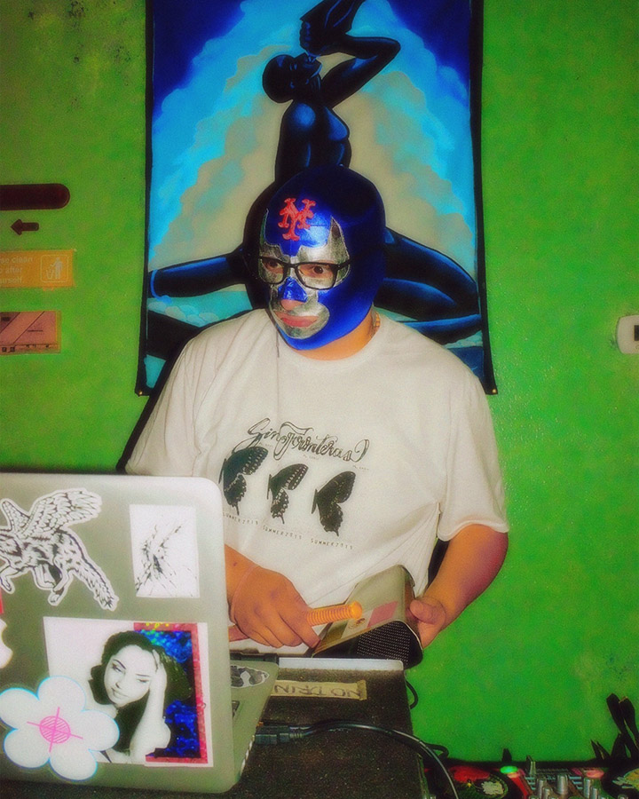

Sin Fronteras: Art and Preformance in Solidarity
MAY 16TH 2020 - 1395 Lexingotn Ave 92nd st.
DJ Osito will be opening the annual fundraiser, hosted and produced by Cloudbusting Magazine for the anti ICE art exhibtiion. Many artists work come from immigrant and first generation Americans
as a result of their curated and combined efforts to put awareness towards the discussions we have on immigration policies.